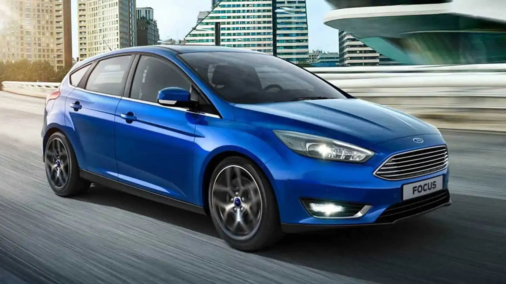
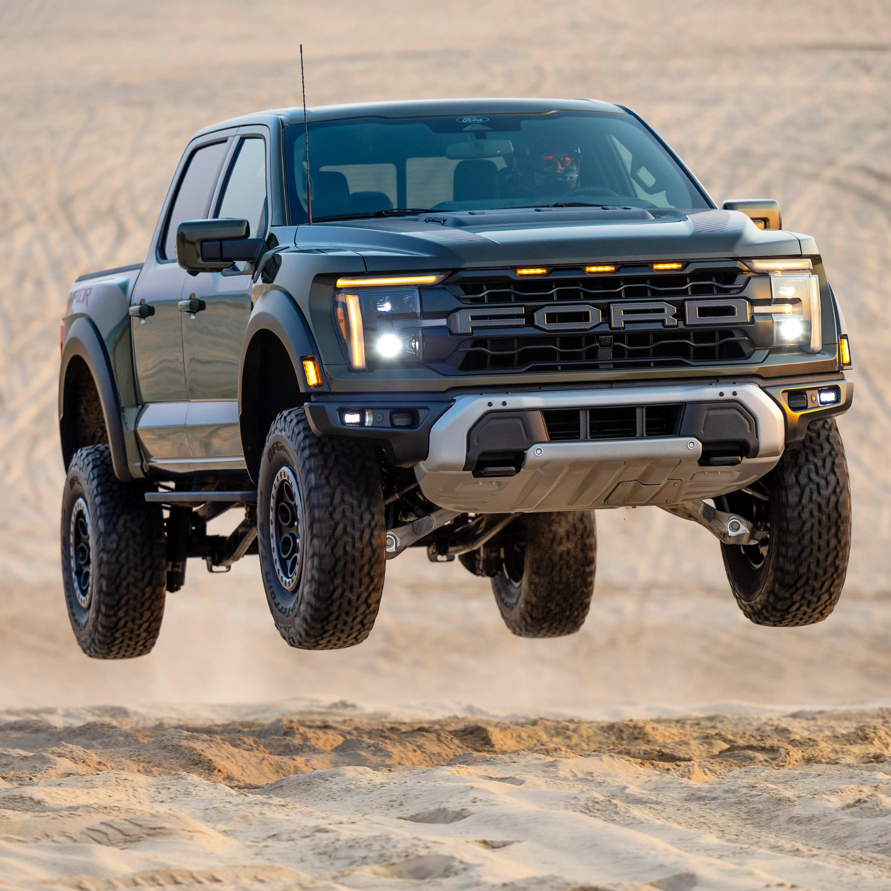
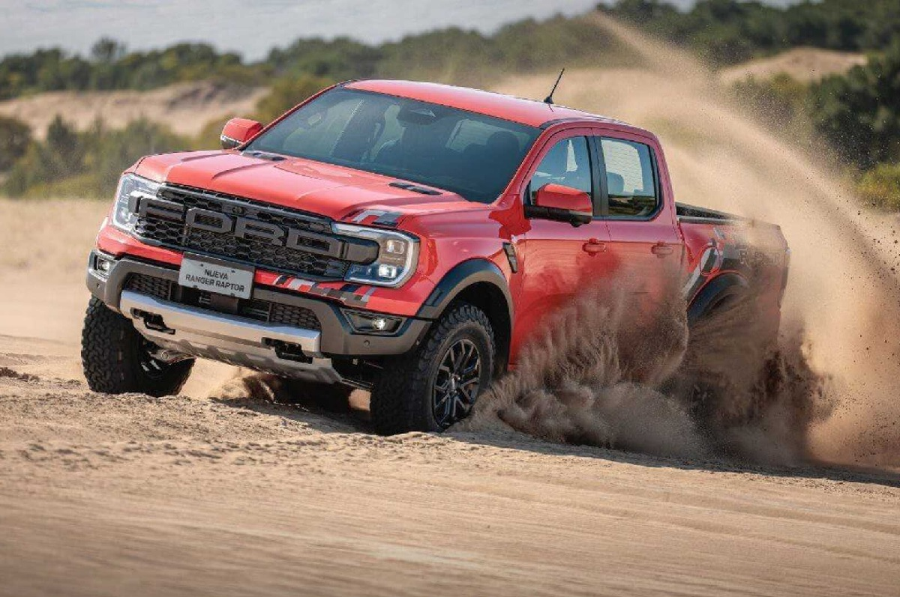

Ford
El ovalo. Hecho para durar, es raza fuerte.
Ranger
- Motor: 3.0 V6 TDI 250cv (3250rpm).
- Tranmision: AT de 10 velocidades.
- Traccion: 4WD
- Personalidad: 6
Focus
- Motor: 2.0 4 Cyl. En linea Nafta 16v 170cv(6600rpm).
- Transmision: Mt de 5 vel o At de 6 vel. (Powershift).
- Traccion:FWD
- Personalidad:6
Mustang
- Motor: 5.0l V8 (Coyote) Nafta 32v 492 cv(7.250 rpm).
- Tranmision:AT de 10 velocidades con levas al volante.
- Traccion: RWD
- Personalidad: 8
Ford F150 Raptor
- Motor: EcoBoost 3.5L V6 HO Naftero 24v 456cv(5850rpm).
- Tranmision: 10 Velocidades Automática.
- Traccion: 4WD.
- Personalidad: 9.
Ford Ranger Raptor
- Motor: Naftero Ecoboost 3.0L V6 Bi-Turbo 397cv(6250rpm).
- Tranmision: 10 Velocidades Automática.
- Traccion: 4WD.
- Personalidad: 9.

- 

- 
- 